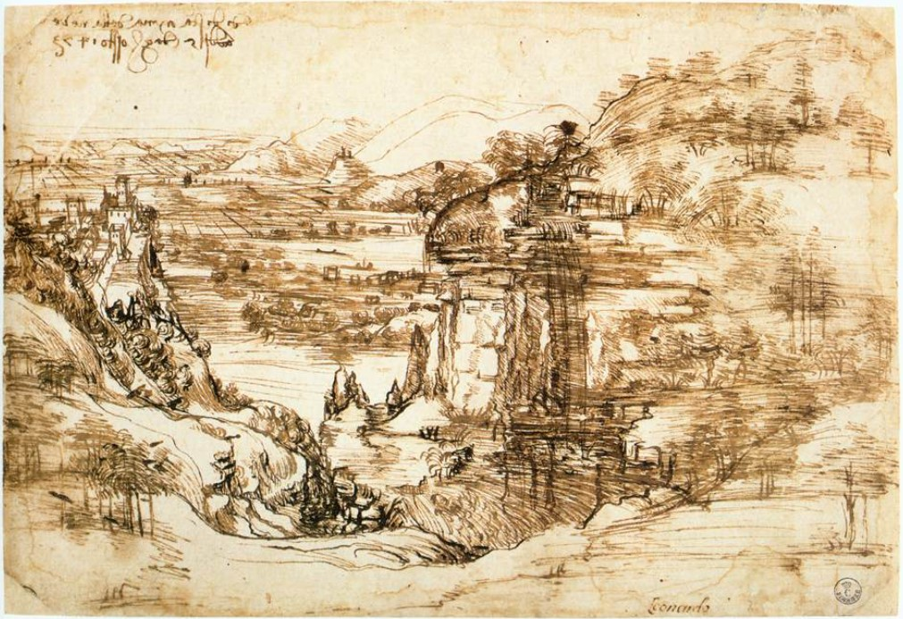

Leonard da Vinci
A master of many sciences and languages

Here's a time line of Leonardo da Vinci's life:
- 1452 - Born in Vinci, in Italy. Leonardo was born to Ser Piero, a notary, and Caterina, a peasant girl; his parents were never married.
- 1467 - Leonardo Becomes An Apprentice To Andrea Del Verrocchio, In Florence.
- 1469 - Lorenzo And Giuliano De Medici Become New Rulers Of Florence.
- 1472 - Leonardo Becomes A Member Of The Florence Painters' Guild. Birth Of Copernicus.
- 
- 1473 - Leonardo Draws A Landscape On The Feast Of Santa Maria Delle Neve.
- 1476 - Leonardo Charged With Sodomy On April 9; The Case Is Dismissed June 16.
- 1477 - Leonardo Had At Least Some Part In The Painting The Annunciation To The Virgin, Completed Around This Time.
- 1478 - Leonardo writes in his notebooks that he has begun "two Virgin Marys." He also paints the Portrait of Ginevra de Benci around this time.
- 1482 - Leonardo Moves From Florence To Milan, Entering The Patronage Of Ludovico Sforza. By this time, Leonardo is writing in his notebooks regularly.
- 1483 - Leonardo Receives A Commission To Paint The Virgin Of The Rocks.
- 1489 - Leonardo Studies Anatomy.
- 1490 - Leonardo Begins Work In Earnest On The Bronze Horse For His Patron Ludovico Sforza. Leonardo Begins A Book On Landscape And Hydraulic Works; It Is Never Finished.
- 1495 - Leonardo Begins His Last Supper In The Convent Of Santa Maria Delle Grazie.
- 1496 - Leonardo Illustrates Mathematician Fra Luca Pacioli's De Divina Proportione.
- 1498 - Leonardo Decorates The Walls And Ceiling Of The Sala Delle Asse. He Also Made His First Attempts At Planning A Flying Machine Around This Time.
- 1500 - Leonardo And Pacioli Go To Mantua, Then Leonardo Continues On To Florence. In Mantua, he draws the Portrait in Profile of Isabelle d'Este. In Florence, he paints the Virgin and Child with Saint Anne.
- 1502 - Leonardo Becomes Cesare Borgia's Military Engineer. Leonardo travels around the Romagna, inspecting fortifications.
- 1503 - Back In Florence, Leonardo Begins The Battle Of Anghiari.
- 1505 - Leonardo Makes A Second Attempt To Build A Flying Machine And Begins Sketches For The Mona Lisa, Which He Completes Sometime Later.In 1505, Leonardo gives up on the Battle of Anghiari, which is deteriorating as he works on it.
- 1506 - In May, Leonardo Is Summoned To Milan By Charles D'Amboise, The French Governor.
- 1507 - Leonardo Is Appointed Louis XII's Painter And Engineer. He paints a second version of the Virgin of the Rocks.
- 1508 - Michelangelo Begins Work On The Sistine Chapel Frescoes.
- 1513 - Leonardo Moves To Rome. Living in the Vatican, he studies the properties of mirrors. It is perhaps at this time that he paints the Turin Self-portrait.
- 1515 - Around This Time, Leonardo Paints The Painting John The Baptist. He also constructs a mechanical lion for the coronation of the new king of France, Francis I.
- 1516 - Leonardo Permanently Leaves Italy For France, Where He Will Serve Francis I In His Court In Amboise.
- 1519 - In May, Leonardo Dies At Cloux.